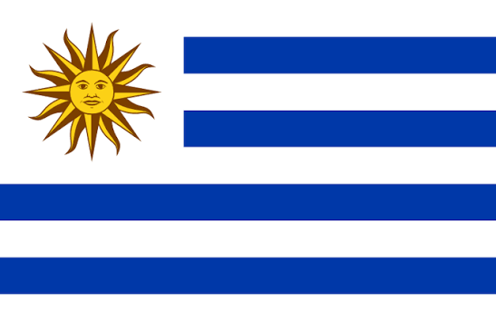

Copa do Mundo 1930

País-sede
Campeão

Vice-campeão
- Sede: Uruguai
- Campeão: Uruguai
- Vice-campeão: Argentina
Contexto
- Primeira Copa do Mundo da história.
- Participação de apenas 13 seleções.
- Não houve eliminatórias.
- O torneio celebrou o centenário da independência uruguaia.
Destaques
- Primeiro gol da história marcado por Lucien Laurent, da França.
- Final disputada no Estádio Centenário, em Montevidéu.
- Uruguai venceu a Argentina por 4 a 2.
- A seleção uruguaia derrotou a Argentina na grande final pelo placar de 4 × 2, consagrando-se como a primeira vencedora da história do torneio da FIFA.
Artilharia
- Artilheiro: Guillermo Stábile (Argentina) marcou 8 gols.
- Vice-artilheiro: Bert Patenaude (Estados Unidos) marcou 4 gols.